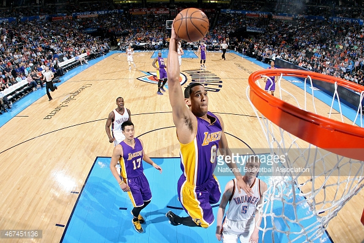
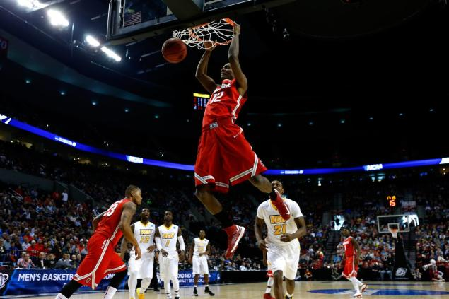
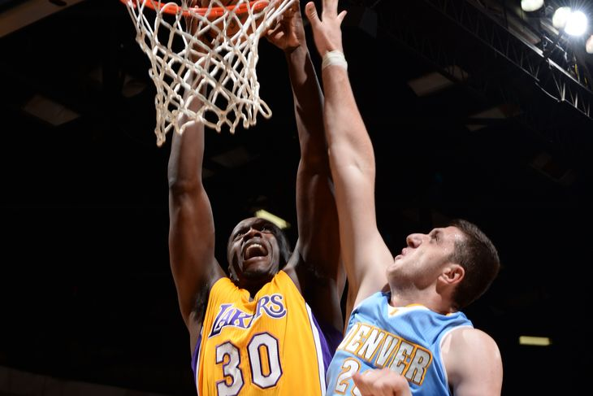
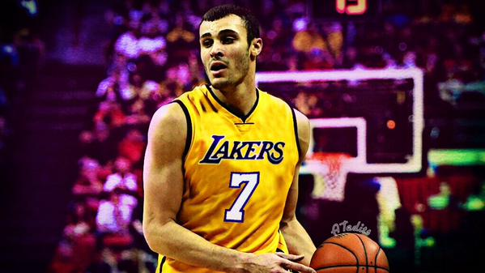

Tariq Black... was hanging around with Dwight Howard in Houston. Got a handful of starts when Howard got hurt. Even had 11 points and nine rebounds against the Clippers, not bad for a guy who went undrafted.
But then Houston waived him to make room for the unexpected signing of Josh Smith. Black was crushed.
The Lakers came calling, picking him up via waivers. It was a good fit for Black."A hundred percent," Black said Thursday. "I feel I like I’ve found a home here."

Jordan Clarkson... After surprising many last year, many felt that Clarkson could possibly find himself out of the mix at some point, especially with hype on Russell, the coming of Lou Williams, the expected return of Kobe Bryant, and the tight-rope status of Nick Young.
That and of course a lot of other guards who could be bumped up at some point if they prove to be worthy are some things that could dislodge Clarkson from his role.
But based on his performance in the Summer League, it looks like the 6-foot-4-inch standout from Missouri will be get the keys to the car from the beginning.

D'angelo Russell... was the L.A. Lakers 1st rd pick, selected second overall in the NBA Draft.
Ohio State guard D'Angelo Russell has been one of the most impressive freshmen in the country this season. The 19-year-old has an effortless shot release and he's capable of completing passes that'll make you question the laws of physics. At 6'5 with a long wingspan, Russell has all the raw tools necessary to develop into a star playmaker in the NBA.
Russell's 28 points led the Buckeyes to a 75-72 overtime victory over VCU in the opening round of March Madness.

Julius Randle...scored 17 points with four rebounds, one assist and one steal in 21 minutes against the Mavs on Wednesday.
After the game, Randle said the summer league minutes restriction is frustrating and he's just focusing on keeping everything in perspective. As for his performance today, he looked like the player the Lakers wanted him to be. Randle wasn't forcing the contact quite so much today and he seemed to know where the double teams were going to come from. He also did more ball handling today on the offensive end. Jul 15 - 10:51 PM

Larry Nance jr... amble around the basketball court and it looks as if success was preordained.
The Wyoming senior not only possesses strong bloodlines but also shares the name of his father, Larry Nance Sr., the former 13-year-NBA veteran who dazzled fans with almost freakish athletic ability. The 6-foot-8 Nance Jr. displays that attribute as well as a striking number of his dad's on-court mannerisms.
But what few outside this high-elevation campus know is that the preseason Mountain West Conference player of the year can compete at the college level only because of a medical diagnosis during his sophomore year of high school that changed his life.